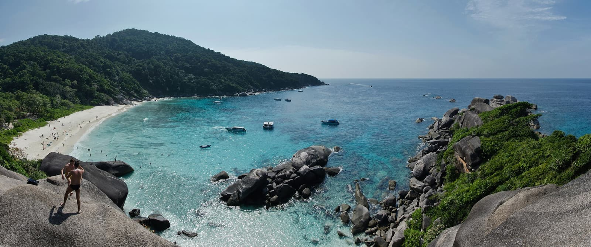

Îles Similan
Thaïlande · plongée, snorkeling, baignade

Des blocs de granit posés sur le sable blanc, des gorgones et une eau très claire. Le parc national ferme une partie de l'année pour laisser le récif souffler.
- Lieu
- Thaïlande
- Niveau
- Intermédiaire
- Activités
- plongée, snorkeling, baignade
- Type d'eau
- Mer / océan
- Coordonnées
- 8.65, 97.64 (position approximative du secteur)
Dangers à connaître
- Parc national : période de fermeture annuelle, renseigne-toi.
- Courant modéré entre les blocs.
Le conseil d'Ocean Buddy
Vérifie les dates d'ouverture du parc avant de réserver quoi que ce soit.
Ouvrir dans Ocean Buddy Télécharger sur l'App Store
Source : Description historique Ocean Buddy · vérification externe en attente.